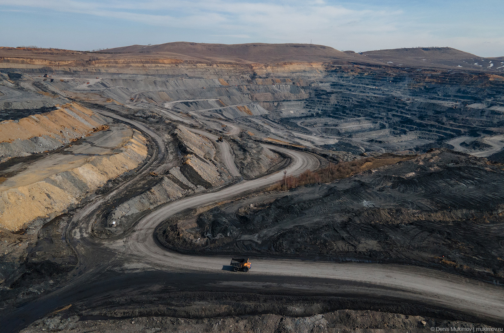
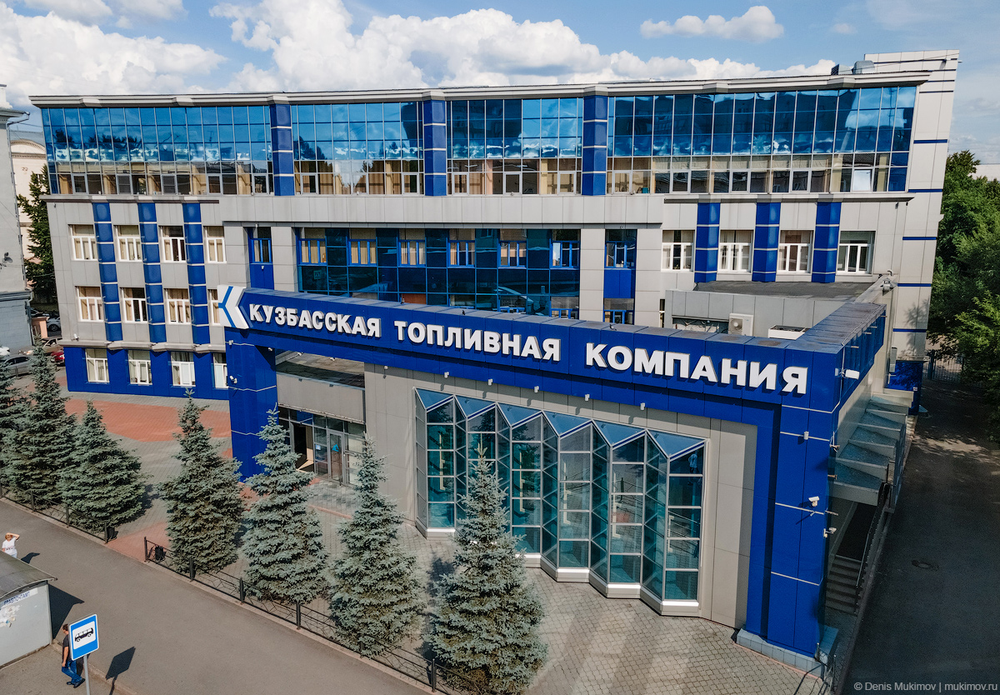
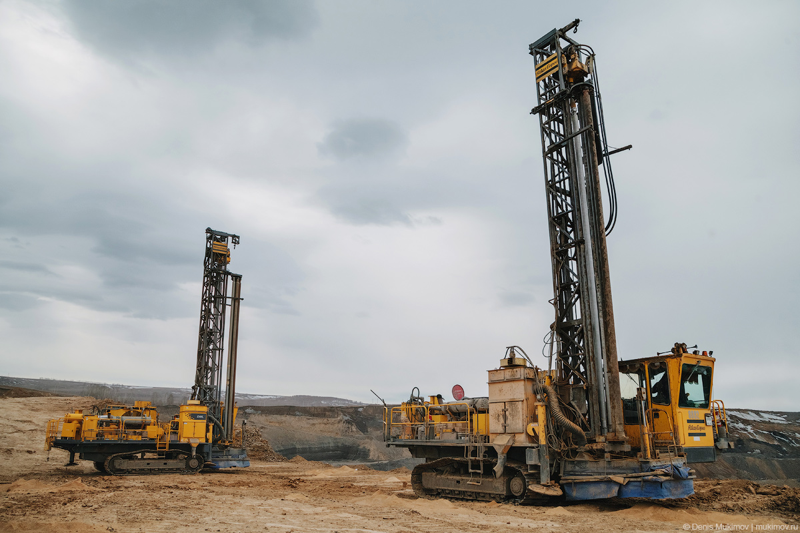

О компании
Деятельность компании
Российская компания, производитель энергетического угля.
Производственные активы компании включают четыре действующих
и один проектируемый угольный разрез, две обогатительные
фабрики, формирующие единый производственный кластер в Беловском
районе Кемеровской области

История создания
компания основана в 2000 году как государственное унитарное
предприятие администрацией Кемеровской области. Возглавил компанию,
создаваемую при поддержке властей, бывший первый заместитель главы
администрации Кемеровской области Игорь Прокудин (тогда же он возглавил
созданное администрациями Кемеровской и Новосибирской областей «для
снабжения углем населения» ООО «Кенотэк»). В 2001 году ГУП был
акционирован, а впоследствии акции компании были приобретены её
руководством.[2][3]
В 2003 году компания получила первую лицензию на разработку угольного
месторождения. Ещё через год была начата добыча угля. В 2006 году КТК
и ООО «Кенотэк» объединились.[2]
В декабре 2011 года компания стала победителем аукциона на право
пользования недрами разреза «Брянский» с запасами в размере 250 млн
тонн угля по категории С2. Разрез расположен в непосредственной близости
от существующих инфраструктурных и добывающих активов.

Собственники и руководство
Основными владельцами компании являются её генеральный директор
Игорь Прокудин (50,001 %) и председатель совета директоров Вадим
Данилов (15,6 %)[4]. В 2010 году компания провела IPO, её акции
торгуются на ММВБ/РТС. В свободном обращении (free float) находится
34,4 % акций, которые распределены между более чем 25 российскими
и иностранными инвестиционными фондами[4].
В мае 2019 года компания сменила владельцев — Прокудин и Данилов
продали свои доли. В результате Михаил Гуцериев # 69 и его сын
Саид # 80 получили 19% КТК, а давние знакомые и партнеры Гуцериева
Искендер Халилов и Виктор Пичугов — почти 50% акций компании. На
бирже их суммарный пакет (66,85%) в момент сделки стоил около 13
млрд рублей.
